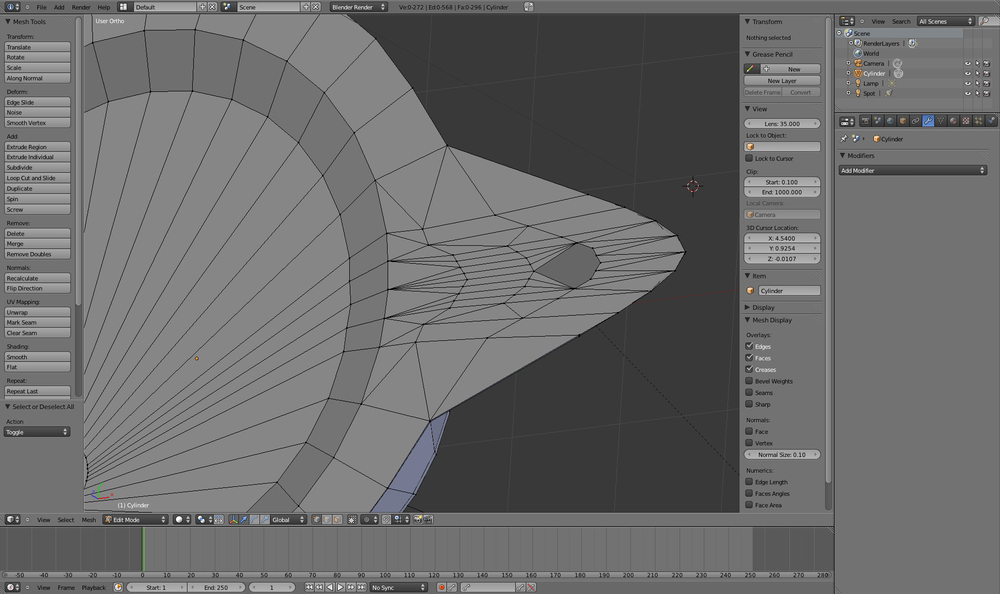

Blender Beginner for Beginner Tutorial: Roman Lamp
4th June 2011 - Blender 2.57b
Recently the Blender 2.5x series was properly released (as opposed to the beta versions that have been around for some time). There have been significant changes since the old 2.4x releases, so to learn the new interface I tried modelling something simple. Here I describe the steps to modelling a Roman lamp, with the final result below. The blender file can be downloaded from here.
{kind=link}
Although Blender’s layout has changed, most of the old information and controls are present, just in a different place. Many of the commands now appear in a list down the left (in the default view) called Mesh Tools and the transform details appear in another panel on the right of the 3D view when N is keyed (rather than floating over the 3D view). As before, the default screen layout is modifiable, but I’m keeping it unchanged for this tutorial. Some commands have changed. The old knife tool is not available anymore, replaced with something not as flexible. The SPACE key brings up a help menu rather than adds a mesh to the view. CTRL-F3 saves a screenshot instead of using a menu item. There are also some new features, most usefully “Limit selection to visible”. It means that only visible vertices, edges or faces will be selected - that is only those facing the screen are selected, others on the far side are omitted. It is quite useful, give it a try. It is controlled with the button shown below, visible when in edit mode on a mesh.
-
Start by deleting the starting cube and replacing it with a cylinder
(centered at the origin, 32 vertices, radius 3, depth 2). This has to be
done with a menu item from the menu bar (Add -\> Mesh -\> Cylinder), as
the old SPACE key menu doesn’t work anymore.
-
Select the cylinder with a RMB click and use TAB to get into edit mode.
Press NUMPAD1 for a side view and ensure “Limit selection to visible” is
off. Use the B key to box select just the bottom ring of vertices. Scale
(S key) them in the X & Y axes by 0.6.
-
Unselect all (keep hitting the A key until no vertices are highlighted).
Select the “Loopcut and Slide” tool under Add on the left side “Mesh
Tools” panel. Loop cut the side of the cylinder twice and slide one of
them close to the top of the cylinder and the other close to the bottom.
Later we will be using subsurface subdivision which can do strange
things to edges (creating bumps or ridges). These extra loops will help
stop this. The closer they are to the current top and bottom edge loops,
the sharper that edge will be. I put the bottom loop close’ish to the
bottom so it will still have a curve and the top one much closer so it
doesn’t look like more than a bevel (I don’t think the bevel tool is
available in this version of Blender).
-
Turn “Limit selection to visible” on. Go into edge edit mode (when in
edit mode use CTRL-TAB and select Edge). Use NUMPAD7 to get a topdown
view. Now box select all the edges visible (which is all the edges
forming the top of the cylinder) and press the Subdivide tool button on
the “Mesh Tools” panel. Previously, the number of subdivisions could be
specified before using the tool, but now it looks like it just does one
- which is ok for now, because that is all we want. The new inner circle
on the top of the cylinder will become the “dish” part of the lamp.
-
Now to build the “spout” of the lamp. Go into vertex select mode (when
in edit mode use CTRL-TAB and select Vertex). Select the 6 vertices out
along one axis and then subdivide.

-
Go into edge select mode. Select the inner circle edge loop (the one
created in step 4). Pressing ALT when using RMB to select will select
the entire loop of edges, although in this case you may need to add the
edges of the loop adjacent to the spout individually. Scale the loop out
in the X & Y axes so that it is closer to the outer edge. The subdivide,
select the new inner edge loop and scale it out towards the previous
loop. These will define the “lip” and and depression of the dish. Grab
the inner circle and move it down a little in the Z axis. Then subdivide
again. Select just the new edge loop. This will be the hole for filling
the lamp with oil. Scale it down and move it to where you like, then
delete the center point.
-
Next to make the hole in the spout for the wick. I found this the
hardest part. Go to face select mode and select the faces in the centre
of the spout and subdivide.

 Then select the edges that make up the hole and use “To Sphere” by pressing SHIFT-ALT-S and try to get a roughly circular hole. Then add the Subsurface modifier by adding a “Subdivision Surface” modifier on the Modifiers tab (its icon is the little spanner) on the Properties panel (on the far left in the default view). This is what the lamp will look like. -
Add a torus (Add -\> Mesh -\> Torus) and position to make a handle for
the lamp. You could also try reshaping it a bit, but I left mine plain.
-
To finish up select all faces and click the Smooth button under “Mesh
Tools”. Now to add a terracotta material to the whole lamp. Start by
going to the Material tab on the Properties panel and adding a new
material (if there is not already one). Set the Diffuse colour to a pale
orange (eg Red=0.85, Green=0.35, Blue=0.15) with an intensity of 0.55
and set the Specular intensity to 0. Thus will result in a flat colour.
{kind=link}
{kind=link}
{kind=link}
{kind=link}
{kind=link}
{kind=link}
{kind=link}
{kind=link}
{kind=link}
{kind=link}
{kind=link}
{kind=link}
{kind=link}
And it is complete! You can download my lamp blend file here. I was going to try adding a flame, but after much effort I could not get flames working in Blender - something for another project. It is also quite a simple model (but that was my intention), it could be improved with more work on the spout. Depending on usage it could be decorated with an image texture that is “stamped” (ie, just affecting the normals) on the dish.

Roman
Lamp Blender Model by
Charles
Cordingley is licensed under a
Creative
Commons Attribution 2.0 UK: England & Wales License.